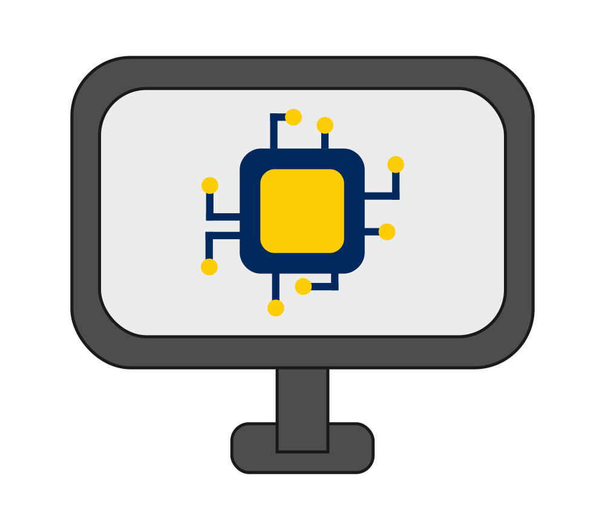
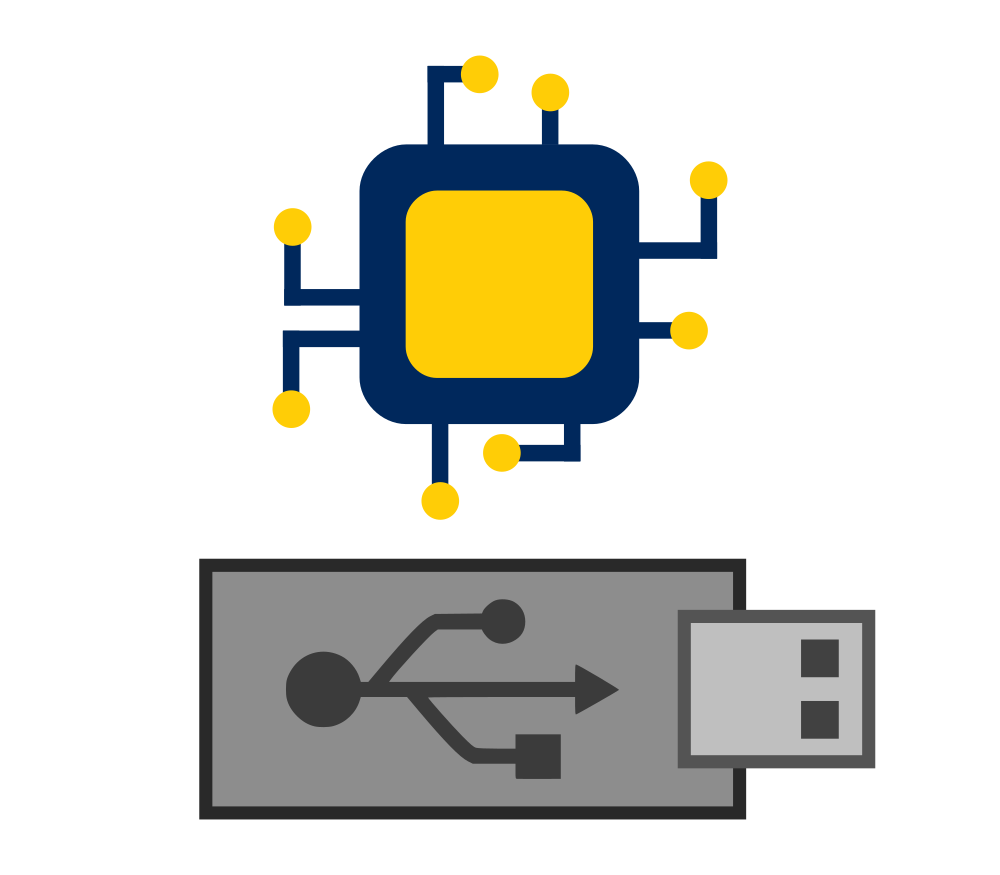
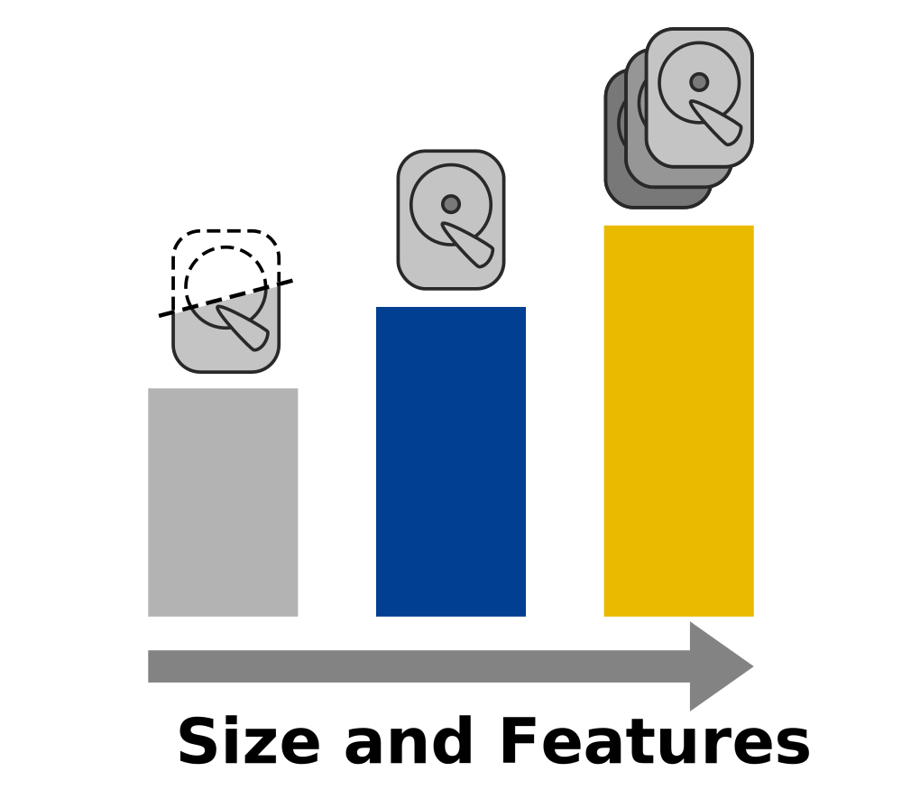

What is BOINC OS?
A minimalist, pre-packaged linux distribution for performing distributed/volunteer computing on as large of range of computer hardware as possible.
Mission
"Before making this project I saw and heard of my friends, acquaintances and even people online having computer hardware sitting and doing nothing. The possible usage of this idle hardware prompted me to conceptualise this solution."
"I want people to see the power that computers have in solving large scale and physically unimaginable problems humanity is faced with - and what better way to do it than making it as simple as possible for people to get involved in computational science."
— Delta1512
Primary Developer and Founder of Boinc OS
About the System
BOINC OS is based on Arch Linux and contains tools to perform volunteer computing with BOINC as well as many more additional features. It is made to be as portable as possible and aims to be placed on USB to be used between various computer systems and simplify the process of setting up a system for distributed/volunteer computing.
About BOINC
BOINC stands for Berkeley Open Infrastructure for Networked Computing and is a software solution that allows scientific organisations to utilise the distributed computing capabilities of a network of volunteer computers around the world.
Many scientific organisations today have phenomenally huge datasets or problems that are infeasible for manual processing and far too expensive to hire a supercomputer (or the like) for. BOINC allows everyday people to contribute their processing power to solve these scientific problems in a parallel and distributed manner by splitting up processing tasks into work units and sending them to volunteers.

Easy to Use
BOINCOS makes it easy to get started with distributed computing and includes an intuitive and simplistic GUI in addition to extensive documentation. It’s as easy as Flash - Boot - Configure - Compute!

Portable
This OS is built to run on a USB and can be taken from computer-to-computer to contribute their capabilities and hardware to scientific computing.

Multiple Spins
Multiple different versions that are specific to various use-cases. This includes server/headless computers, standard graphical install for people who need a quick solution and a larger, more complete operating system.